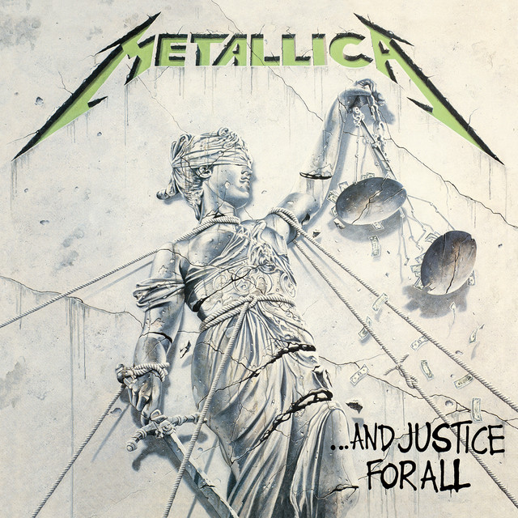
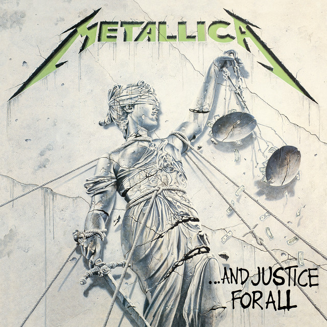

Nueva Gira de Metallica
La banda de thrash metal más famosa del mundo acaba de anunciar una nueva gira para el próximo año.
Tu portal dedicado a la poderosa historia y evolución del género más rebelde de la música: el metal. Descubre sus raíces, los momentos que lo marcaron y las bandas que le dieron forma.
 

La banda de thrash metal más famosa del mundo acaba de anunciar una nueva gira para el próximo año.
Slipknot ha lanzado su nuevo álbum, lleno de brutalidad y energía.
El metal nace a finales de los años 60 y principios de los 70, como una evolución del rock psicodélico y el blues rock. Bandas pioneras como Black Sabbath, Led Zeppelin y Deep Purple sentaron las bases del género con riffs oscuros, letras densas y potentes solos de guitarra.
Mención de la NWOBHM (New Wave of British Heavy Metal), Metallica, Slayer, Iron Maiden y otros gigantes de esa época.
El auge del death metal, black metal, nu-metal, metalcore y otros estilos que hicieron el género aún más variado y complejo.
Pioneros del doom y heavy metal.
Maestros del heavy metal británico.

Un análisis profundo del nuevo trabajo de la banda británica.
Conversación exclusiva con una de las bandas más innovadoras del metal actual.